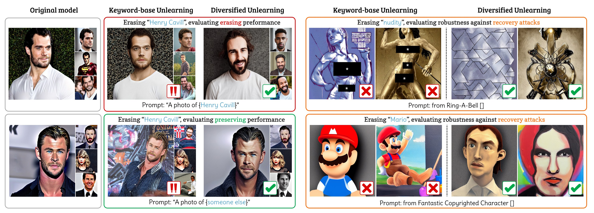
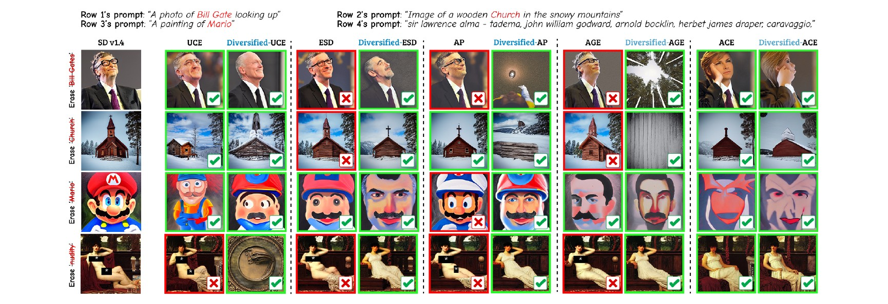
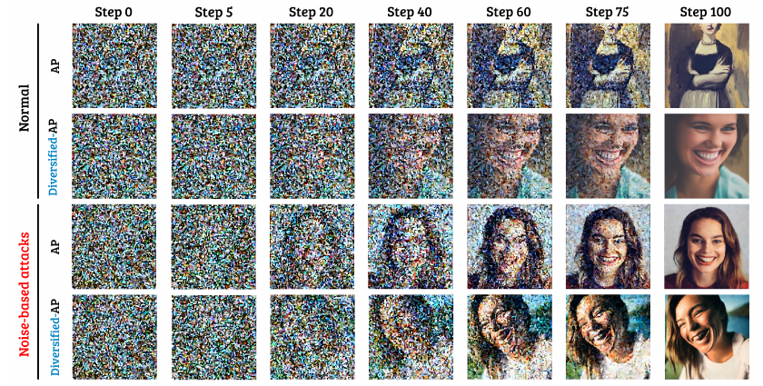

Concept unlearning has emerged as a promising direction for reducing the risks of harmful content generation in text-to-image diffusion models by selectively erasing undesirable concepts from a model’s parameters. Existing approaches typically rely on keywords to identify the target concept to be unlearned. However, we show that this keyword-based formulation is inherently limited: a visual concept is multi-dimensional, can be expressed in diverse textual forms, and often overlaps with related concepts in the latent space. We therefore adopt a contextual view: a concept should be unlearned through the company it keeps. Under this view, keyword-based unlearning approaches, which imprecisely indicate the target concept via a fixed representation, are brittle against prompt-rephrasing jailbreaks and highly prone to collateral over-forgetting. To address these limitations, we propose Diversified Unlearning, a framework that exposes the erasure objective to natural context-dependent embedding variations. Rather than relying on simple prompt augmentation, we construct paired contextual formulations that introduce implicit contrastive supervision directly into the forgetting process, encouraging the model to isolate the target concept while keeping surrounding contexts invariant. Through extensive experiments across multiple benchmarks and state-of-the-art baselines, we demonstrate that integrating our framework as a lightweight add-on into existing unlearning pipelines yields notable improvements in both erasure effectiveness and concept retention, while significantly hardening models against adversarial recovery attacks.
Học quên khái niệm (concept unlearning) là hướng đi triển vọng nhằm giảm rủi ro sinh nội dung có hại của mô hình khuếch tán text-to-image, bằng cách xoá có chọn lọc các khái niệm không mong muốn khỏi tham số mô hình. Các phương pháp hiện có thường dùng từ khoá để chỉ định khái niệm cần quên. Tuy nhiên, chúng tôi chỉ ra rằng cách đặt vấn đề theo từ khoá có giới hạn nội tại: một khái niệm thị giác có nhiều chiều, có thể được diễn đạt bằng nhiều dạng văn bản khác nhau và thường chồng lấn với các khái niệm liên quan trong không gian ẩn. Vì vậy chúng tôi áp dụng góc nhìn ngữ cảnh: một khái niệm nên được học quên thông qua những ngữ cảnh đi cùng nó. Theo góc nhìn này, các phương pháp dựa trên từ khoá — vốn chỉ biểu diễn khái niệm mục tiêu một cách thiếu chính xác bằng một đại diện cố định — rất dễ bị vượt qua bởi các prompt diễn đạt lại (jailbreak) và dễ quên nhầm các khái niệm lân cận. Để giải quyết, chúng tôi đề xuất Diversified Unlearning, khung làm việc đưa mục tiêu xoá tiếp xúc với các biến thể embedding phụ thuộc ngữ cảnh một cách tự nhiên. Thay vì chỉ tăng cường prompt đơn giản, chúng tôi xây dựng các cặp công thức ngữ cảnh tạo ra giám sát tương phản ngầm ngay trong quá trình quên, khuyến khích mô hình tách riêng khái niệm mục tiêu và giữ nguyên các ngữ cảnh xung quanh. Qua thực nghiệm rộng trên nhiều bộ đánh giá và các baseline hiện đại, chúng tôi cho thấy việc gắn khung này như một add-on nhẹ vào các quy trình học quên sẵn có giúp cải thiện rõ rệt cả hiệu quả xoá lẫn khả năng giữ lại khái niệm, đồng thời tăng đáng kể khả năng chống lại các tấn công khôi phục.
Existing unlearning methods describe a visual concept by an isolated keyword (“Barack Obama”, “a photo of Barack Obama”). But a concept is not tied to a single lexical form: the same target appears across paraphrases, attributes, actions and surrounding scenes. Echoing the distributional principle “You shall know a word by the company it keeps” (Firth, 1957), we argue that one shall unlearn a concept by the company it keeps. A systematic analysis reveals two failure modes of keyword-based unlearning:
Các phương pháp học quên hiện nay mô tả một khái niệm thị giác bằng một từ khoá đơn lẻ (“Barack Obama”, “a photo of Barack Obama”). Nhưng khái niệm không gắn với một dạng từ vựng duy nhất: cùng một mục tiêu xuất hiện qua nhiều cách diễn đạt, thuộc tính, hành động và bối cảnh xung quanh. Theo nguyên lý phân phối “Bạn biết một từ qua những từ đi cùng nó” (Firth, 1957), chúng tôi cho rằng cần học quên một khái niệm qua những ngữ cảnh đi cùng nó. Phân tích có hệ thống cho thấy hai điểm yếu của cách học quên theo từ khoá:
Diversified Unlearning pairs the target concept with natural contexts so that the context is shared by both sides of the erasure transformation. This introduces an implicit contrastive supervision: the model is pushed to change the target while keeping the context that the target and anchor have in common. It is a plug-and-play add-on with two modules, one for each family of existing methods.
Diversified Unlearning ghép khái niệm mục tiêu với các ngữ cảnh tự nhiên sao cho ngữ cảnh được dùng chung ở cả hai phía của phép biến đổi xoá. Điều này tạo ra giám sát tương phản ngầm: mô hình bị đẩy thay đổi mục tiêu nhưng giữ nguyên phần ngữ cảnh mà mục tiêu và anchor có chung. Đây là add-on cắm-và-chạy gồm hai mô-đun, mỗi mô-đun dành cho một nhóm phương pháp sẵn có.
Context-set construction. For every target concept an advanced LLM (GPT-4o / GPT-5) writes a small set of natural prompts following a single unified prompt-design rule — e.g. everyday actions for celebrities (“a photo of Henry Cavill smiling”), subject variations that keep the style descriptor for artistic styles, and diverse subjects blended with the keyword for explicit concepts. A recognition model filters the generated images, so no hyper-parameter tuning is needed per concept.
Xây dựng tập ngữ cảnh. Với mỗi khái niệm mục tiêu, một LLM mạnh (GPT-4o / GPT-5) viết một tập nhỏ các prompt tự nhiên theo một quy tắc thiết kế prompt thống nhất — ví dụ hành động thường ngày cho người nổi tiếng (“a photo of Henry Cavill smiling”), biến thể chủ thể nhưng giữ mô tả phong cách cho phong cách nghệ thuật, và các chủ thể đa dạng kết hợp với từ khoá cho khái niệm nhạy cảm. Một mô hình nhận dạng lọc ảnh sinh ra, nên không cần chỉnh siêu tham số riêng cho từng khái niệm.

| Method | Erasure | Preservation | ||||
|---|---|---|---|---|---|---|
| CLIP-i ↓ | GPT ↓ | LPIPS ↓ | CLIP-i ↑ | CLIP-t ↑ | GPT ↑ | |
| ESD | 65.98 | 11.78 | 0.66 | 62.59 | 24.25 | 31.68 |
| Diversified-ESD | 62.58 | 5.50 | 0.63 | 69.73 | 26.28 | 46.15 |
| UCE | 60.59 | 4.48 | 0.65 | 62.90 | 23.97 | 31.42 |
| Diversified-UCE | 58.55 | 2.83 | 0.64 | 66.92 | 24.57 | 24.40 |
| AP | 61.14 | 13.55 | 0.79 | 49.31 | 21.34 | 14.97 |
| Diversified-AP | 60.78 | 6.10 | 0.68 | 70.50 | 27.09 | 51.15 |
| AGE | 60.68 | 18.84 | 0.83 | 42.31 | 17.96 | 6.98 |
| Diversified-AGE | 58.84 | 12.59 | 0.71 | 64.20 | 26.15 | 12.59 |
| ACE | 74.69 | 29.45 | 0.46 | 84.64 | 29.92 | 76.72 |
| Diversified-ACE | 68.67 | 13.53 | 0.39 | 85.91 | 28.88 | 75.05 |
GPT-Score is an identity-focused score computed with Qwen2.5-VL-72B (0–100). Diversified-ESD and -AP roughly halve the erasure GPT-Score while raising preservation.GPT-Score là điểm tập trung vào định danh, tính bằng Qwen2.5-VL-72B (0–100). Diversified-ESD và -AP giảm khoảng một nửa GPT-Score khi xoá, đồng thời tăng khả năng giữ lại.
| Method | I2P · NudeNet | MS-COCO 30K | |
|---|---|---|---|
| Total detections ↓ | FID ↓ | CLIP ↑ | |
| SD v1.4 | 743 | 14.04 | 31.34 |
| UCE | 253 | 14.85 | 31.27 |
| Diversified-UCE | 196 | 14.87 | 29.30 |
| ESD | 377 | 14.71 | 30.82 |
| Diversified-ESD | 212 | 14.05 | 31.06 |
| AP | 355 | 14.71 | 30.98 |
| Diversified-AP | 172 | 14.21 | 31.01 |
| AGE | 300 | 14.41 | 30.99 |
| Diversified-AGE | 244 | 13.82 | 31.00 |
| ACE | 39 | 14.63 | 30.85 |
| Diversified-ACE | 26 | 14.85 | 30.60 |
Diversified-ESD and -AP cut total nudity detections by 44% and 52% relative to their baselines while keeping COCO-30K FID / CLIP close to the original SD v1.4.Diversified-ESD và -AP giảm tổng số phát hiện nudity lần lượt 44% và 52% so với baseline, trong khi FID / CLIP trên COCO-30K vẫn gần với SD v1.4 gốc.
Keyword-based unlearning often only steers generation away from the concept and leaves it recoverable. Because Diversified Unlearning removes the concept across its contextual company, it behaves more like destruction-based removal. We test three attacks: Ring-A-Bell adversarial prompts (nudity), Indirect Recovery (IR) through high-context prompts that omit the name “Mario”, and Noise-based attacks on the ten-celebrity erasure models.
Học quên theo từ khoá thường chỉ lái việc sinh ảnh tránh xa khái niệm và để lại khả năng khôi phục. Vì Diversified Unlearning gỡ khái niệm khỏi toàn bộ ngữ cảnh đi cùng, nó hoạt động giống gỡ bỏ theo kiểu phá huỷ hơn. Chúng tôi thử ba loại tấn công: prompt đối kháng Ring-A-Bell (nudity), Indirect Recovery (IR) bằng prompt giàu ngữ cảnh nhưng không nhắc tên “Mario”, và tấn công bằng nhiễu trên các mô hình xoá mười người nổi tiếng.
| Method | Ring-A-Bell ASR ↓ | IR GPT ↓ | ||
|---|---|---|---|---|
| K16 | K38 | K77 | Mario | |
| AP | 46.32 | 48.42 | 54.47 | 38.13 |
| Diversified-AP | 38.95 | 41.05 | 38.95 | 33.75 |
| AP ↓ | ESD ↓ | AGE ↓ | UCE ↓ | |
|---|---|---|---|---|
| Baseline | 39.63 | 28.19 | 33.00 | 2.00 |
| Diversified | 14.94 | 11.75 | 29.81 | 1.13 |

We revisit the brittleness of keyword-based concept unlearning in text-to-image models. Guided by the principle that a concept should be unlearned through the company it keeps, Diversified Unlearning injects implicit contrastive supervision into the unlearning pipeline via structured context pairs. Through two plug-and-play modules — Diversified Prompting and Diversified Embedding Mixup — it delivers stronger erasure, cleaner retention of benign neighbours and improved robustness against advanced recovery attacks, without architectural overhead.
Chúng tôi xem xét lại tính mong manh của học quên khái niệm dựa trên từ khoá trong các mô hình text-to-image. Dựa trên nguyên lý một khái niệm nên được học quên qua những ngữ cảnh đi cùng nó, Diversified Unlearning đưa giám sát tương phản ngầm vào quy trình học quên thông qua các cặp ngữ cảnh có cấu trúc. Với hai mô-đun cắm-và-chạy — Diversified Prompting và Diversified Embedding Mixup — phương pháp cho khả năng xoá mạnh hơn, giữ lại sạch hơn các khái niệm lân cận vô hại và bền vững hơn trước các tấn công khôi phục tiên tiến, mà không thêm chi phí kiến trúc.
If you find this work useful, please cite:Nếu nghiên cứu này hữu ích cho công việc của bạn, xin vui lòng trích dẫn:
@inproceedings{pham2027diversified,
title = {Unlearn in Context: Contrastive Alignment via Diversified Supervision for Diffusion Models},
author = {Hao Pham and Duy Truong and Duy Khanh Dinh and Cuong Tien Nguyen and Tuan Anh Bui},
booktitle = {IEEE/CVF Winter Conference on Applications of Computer Vision (WACV)},
year = {2027},
}